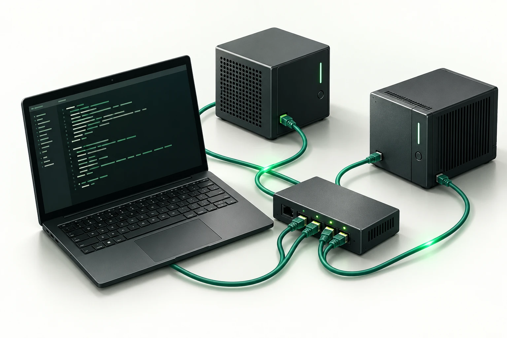

Kali Reconnaissance & Defender Visibility
Follow scoped lab activity from service discovery to network observations and analyst review.

The investigation design
This proposed walkthrough connects a service-discovery exercise in an isolated Kali lab to the observations a defender can inspect. It extends the Kali/Wireshark/Snort work described in my résumé; this particular walkthrough has not been executed for the portfolio.
The lab scene
A Kali workstation and an intentionally configured target share an isolated test network. A separate collection point preserves the relevant network observations. The scope is a known lab target, with a baseline of ordinary traffic for comparison.
From reconnaissance to a defender’s question
- Establish the baseline. Record expected services and ordinary connection behavior.
- Run scoped discovery. Use Nmap against the lab target and preserve the activity and timing.
- Inspect the network side. Compare connection attempts, destination ports and timing in captured traffic or available sensor logs.
- Investigate in Splunk. Search the imported observations, explain the pattern and compare it with authorized administrative discovery.
What would make the case convincing
A lab topology, exact scope, a genuine tool capture, a packet or event timeline, the corresponding Splunk searches and a short report. The report should explain whether the activity is merely observable, matches a detection candidate or supports a stronger conclusion.
Existing work to inspect
Résumé network-intrusion lab ↗ · Reproducible generated packet case ↗
Scope
Investigation design, not a newly completed scan or detection result. The artwork is illustrative. All execution belongs in the isolated lab; this page performs no scanning.